Chapter 9 · Part 1 — Ouch!
The sun shone on the . It sparkled like a diamond.
Jack felt safe now. His was taking good care of him.
The slowed down as they neared the .
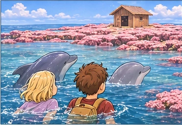
Jack lowered his feet. He felt the bumpy . He let go of the ’s fin and stood up in the water.
Annie stood, too.
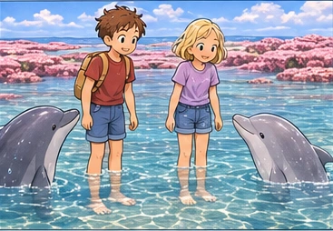
Then she threw her arms around her and gave her a big hug.
“Thank you, Sukie!” she cried. And she kissed the ’s nose.
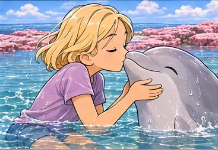
Sukie tossed her head and clicked at Annie.
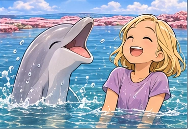
“Kiss Sam now!” Annie said to Jack.
“You’re nuts,” said Jack.
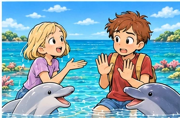
But Sam nuzzled Jack’s head. Then he put his flippers around Jack’s neck.
Jack couldn’t resist. He threw his arms around the and gave him a quick kiss.
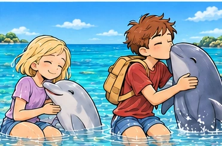
Sam nodded and made clicking sounds like laughter. Then he turned to Sukie.
The two chattered to each other for a moment. They nodded at Jack and Annie and swam gracefully away.
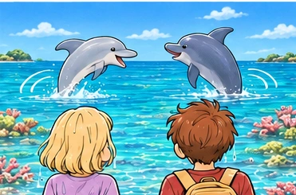
“Bye, Sukie! Bye, Sam!” Annie shouted.
“Thanks!” Jack shouted.
The leapt high into the air. Then they dove back into the water with a SPLASH!
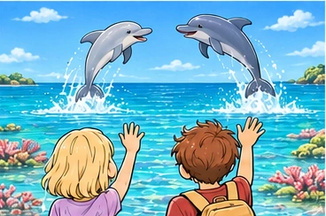
Jack and Annie laughed. “I wish we could swim like that,” said Jack.
Jack and Annie watched the until they disappeared.
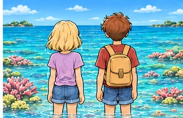
“I miss them already,” Annie said softly.
“Me too,” said Jack.
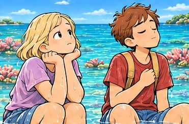
He sat down in the shallow water.
“I’m really tired,” he said.
Annie sat beside him.
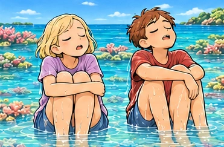
“Me too,” she said.
The warm water lapped around their shorts and T-shirts.
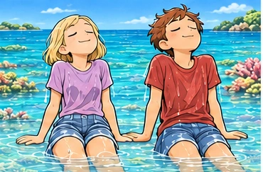
Jack pulled off his pack. He took out his glasses and put them on. They were blurry with water.
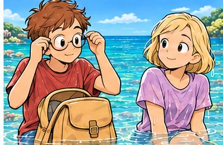
“Guess what,” said Annie.
“What?” said Jack.
“I saw the shark when we were swimming,” Annie said. “But I didn’t tell you. I wanted you to stay .”
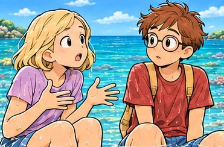
Jack at her. “I saw it, too. I just swam faster so you would swim faster.”
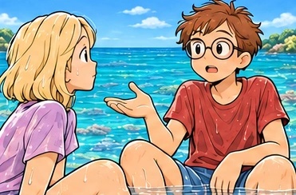
“And I swam faster so you would swim faster,” said Annie.
“I guess we swam double-fast then,” Jack said. He shook his head with wonder.
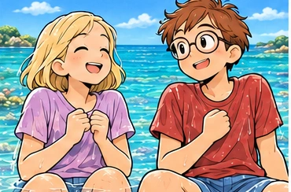
“What now?” said Annie.
“We go home,” said Jack.
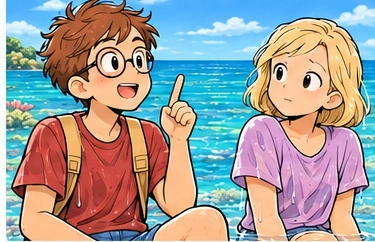
“But we haven’t solved Morgan’s yet,” said Annie.
Jack sighed.
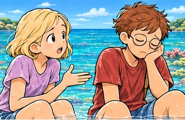
He pulled his out of his pack. It was .
He pulled out the book. It was , too.
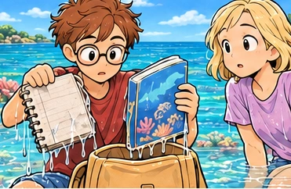
“We’ve ,” he said. “My is all wet. We’ll never be Master now.”
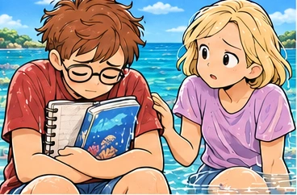
Jack put everything away. “Let’s go,” he said sadly.
He stood up. Then he started across the pink toward the tree house. Annie followed him.
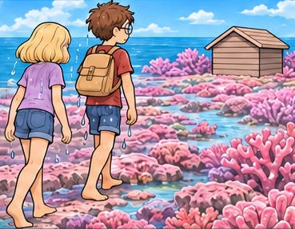
“Ouch!” Annie said.
“What’s wrong?” Jack looked back.
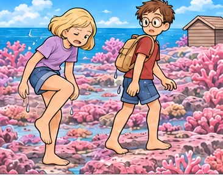